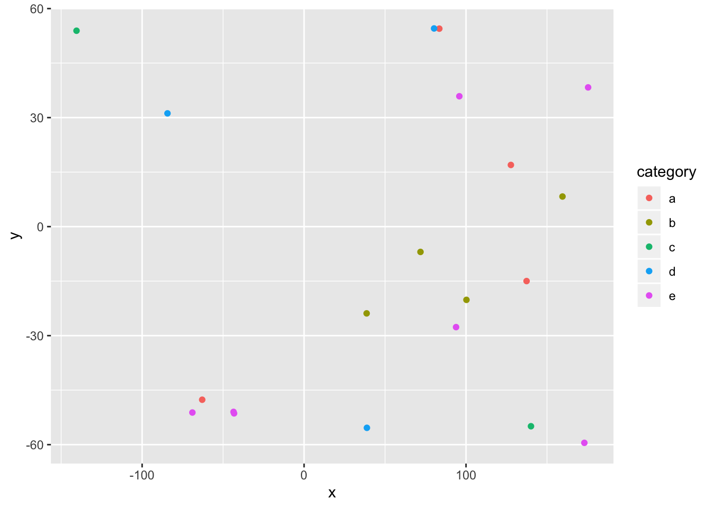

I have the best titles
Subtitle here if desired
Your name here
Introduction
My really awesome and complete introduction will go here.
I know words. I have the best words. ~ Donald Trump
Materials and methods
Narrative and most code will go here. Describe what you are doing and show how to do it (with code).
You can do bullets like this:
- The first most important thing
- The second most important thing
- The third most important thing
You can do numbers like this:
- The first most important thing
- The second most important thing
- The third most important thing
See http://rmarkdown.rstudio.com/ for all the amazing things you can do.
Here’s my first code chunk.
1+2## [1] 3Load any required packages in a code chunk (you may need to install some packages):
library(dplyr)
library(ggplot2)
library(maps)
library(spocc)
knitr::opts_chunk$set(cache=TRUE) # cache the results for quick compilingWe are going to use the occ() function to download occurrence records for the American robin (Turdus migratorius) from the Global Biodiversity Information Facility.
 Licensed under CC BY-SA 3.0 via Wikimedia Commons
Licensed under CC BY-SA 3.0 via Wikimedia Commons
{kind=link}
## define which species to query
sp='Turdus migratorius'
## run the query and convert to data.frame()
d = occ(query=sp, from='ebird',limit = 100) %>% occ2df()This can take a few seconds.
# Load coastline
map=map_data("world")
ggplot(d,aes(x=longitude,y=latitude))+
geom_polygon(aes(x=long,y=lat,group=group),data=map)+
geom_point(col="red")+
coord_equal()Map illustrating the known occurrence locations
Results
Show tables, plots, etc. and describe them.
hist(d$latitude)
Conclusions
What have you learned? Are there any broader implications?